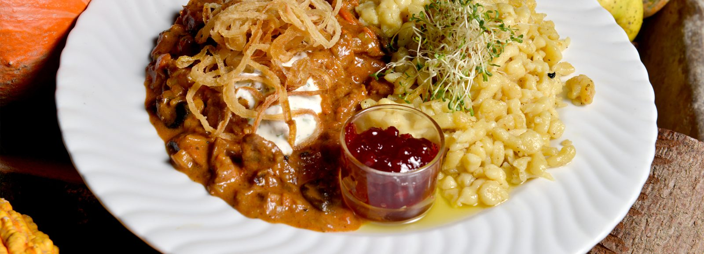

Rund ums Wirtshaus
Kegeln, Eisstock, Camping und der Flugplatz nebenan
Beim KräuterWirt hört der Tag nicht beim Essen auf: zwei Kegelbahnen, sechs beleuchtete Eisstockbahnen, ein Stellplatz für Wohnmobile und Wanderwege, die direkt vor der Tür beginnen.
Kegelbahn
Lass die Kugeln rollen!
Unsere zwei vollautomatischen Kegelbahnen sind ein Spaß für Groß und Klein, Vereine und Firmen.
Kegeln beim KräuterWirt ist 24/5 möglich: Von Mittwoch bis Sonntag können Sie jederzeit buchen — einfach Termin ausmachen, und schon geht’s los. Sonntag, Mittwoch und Donnerstag mit Selbstbedienung bei den Getränken, Freitag und Samstag mit gewohntem Rund-um-Service vom KräuterWirt.
Was ist wichtig?
- Die Kegelbahn darf nur mit Sportschuhen mit heller Sohle benutzt werden.
- Reservierung ist unbedingt notwendig. Bitte geben Sie dabei an: wie viele Bahnen (1 oder 2) und die Dauer der Kegelpartie (normalerweise 2 Stunden).
Kegelstüberl
Direkt bei den Bahnen liegt das Kegelstüberl — ideal für den „Spaß danach“ bei Firmen- und Weihnachtsfeiern.
Eisstockschießen
Ein Spaß für Groß und Klein, Vereine, Firmen oder Familien: Auf sechs beleuchteten Bahnen können Sie bei eisigen Temperaturen Ihrer Leidenschaft freien Lauf lassen.
Anschließend warten ein deftiges Bratl, gebackene Knödel oder sonstige Wirtshausschmankerl auf Sieger und Verlierer.

Camping
Stellplatz mit Blick auf den Flugplatz
Mitten in der Natur und doch zentral zwischen Freistadt und Bad Leonfelden können Sie mit Ihrem Wohnmobil Urlaub oder Zwischenstopp genießen.
Mit einer einzigartigen Aussicht auf den Flugplatz Freistadt und in unmittelbarer Nähe zum Wirtshaus und zum Ruck-Zuck-Laden punktet der Stellplatz. Wanderwege und Reitwege sind direkt vor Ort.
Einfach unter 0043 664 43 95 013 reservieren — wir freuen uns auf dich!
Aktiv in Hirschbach
Genusswandern beim KräuterWirt
Im Mühlviertel eröffnet das Wandern zusätzlich zur reinen Bewegung oft ungeahnte neue Perspektiven.
Weite erfahren, mit den Kids Spaß haben, Steinbloßhöfe, freundliche gesellige Leute, gemütliche Gastronomie, vom Wirt geführte Touren — das erwartet Wanderer auf unseren herrlichen Wanderwegen.
- Märchenwanderweg
- Rundblickeweg
- Kalvarienberg Hirtsteinweg
- Herrensteig zur Höll
- Herbalix
- Wanderkarte Hirschbach Übersicht
Wintersport in sanfter Hügellandschaft
Erleben Sie faszinierende Augenblicke in unserer verschneiten Hügellandschaft. Bestens gespurte Loipen stehen zum Langlaufen und Skaten bereit. Entdecken Sie die Landschaft bei einer Schneeschuhwanderung oder genießen Sie eine romantische Pferdeschlittenfahrt — kuscheln Sie sich in die gemütlichen Decken und lassen Sie sich kutschieren. Ein Erlebnis für die ganze Familie.
Probierloipe
Für Anfänger besonders geeignet, 3,5 km — Familien- und Kinderloipe, leicht. Ausgangs- und Endpunkt GH Pammer in Guttenbrunn.
Skatingloipe
Parallel zur Diagonalspur geführt, durch kleine Wälder, 7,5 km, mittel-leicht. Ausgangs- und Endpunkt GH Pammer in Guttenbrunn.
Wirtshausloipe
Führt zu allen 5 Wirten der Gemeinde Hirschbach und durch kleine Wälder, 7,5 km — Familienloipe, leicht. Start und Ziel bei allen Wirten.
Kräuterloipe
Entlang der Kräuterfelder, vorbei am Kräuterverarbeitungsbetrieb, durch kleine Wälder, 9,5 km — Familienloipe, mittel. Start und Ziel bei allen Wirten.
Flutlichtloipe
Klassisch und Skating, ca. 1,5 bis 2 km am Sportplatzareal Hirschbach, Dienstag und Freitag 19:00 – 21:00 Uhr. Unkostenbeitrag € 1,50.
Flutlichtlanglauf
Am Sportplatzareal Hirschbach, Montag und Freitag 19:00 – 21:00 Uhr, je nach Schneelage. Unkostenbeitrag € 1,50 — für Sportvereinsmitglieder gratis.
Kontakt und Service Langlauf-Loipen in Hirschbach: Ewald Pirklbauer, Sportplatzareal Hirschbach, 4242 Hirschbach im Mühlkreis, +43 664 8430942, sportunion-hirschbach.org
Der Flugplatz gleich nebenan
Rundflug oder Tandemsprung?
Bei uns sind Sie hautnah am Geschehen und sehen den Flugbetrieb aus nächster Nähe. Der kleine Flugplatz in Hirschbach/Freistadt ist für Piloten, Gäste und Zuschauer etwas ganz Besonderes.
Rundflüge
Der kleine Platz im Norden von Oberösterreich ist der Flugplatz für Leute, die das Besondere suchen — für Piloten, Zuschauer und Gäste. Der Flugplatz Freistadt ist ein Privatflugplatz und für nicht dort stationierte Flugzeuge nur nach PPR anfliegbar. Im Zweifelsfall bitte vorher anrufen, ob Flugbetrieb möglich ist; gesonderte Betriebszeiten sind nach Vereinbarung möglich.
Öffnungszeiten mit Betriebsleiter für nicht stationierte Flugzeuge: Samstag und Sonntag jeweils 10:00 bis 18:00 Uhr. Die Betriebszeiten gelten nur bei Wetterbedingungen, die den Flugbetrieb zulassen; bitte die Einschränkungen für motorisierte Hänge- und Paragleiter beachten.
Fliegerclub Freistadt/Hirschbach, Guttenbrunn 26, 4242 Hirschbach im Mühlkreis. Obmann Walter Mittermühler, +43 7948 216, flugplatzfreistadt.at
Fallschirm-Tandemsprung
Tandemfallschirmspringen bietet Ihnen die Möglichkeit, den freien Fall aus 3.700 Metern über Grund zu genießen. Erfahrene Tandemmaster machen jeden Absprung zu einem sicheren und unvergesslichen Erlebnis.
Wenn Sie größer als 140 Zentimeter und nicht schwerer als 90 Kilogramm sind (mit Kleidung und Schuhen), haben Sie alle Voraussetzungen für einen Tandemsprung. Es gibt kein Alterslimit — ein guter allgemeiner Gesundheitszustand wird vorausgesetzt.
Als einziger Verein in Oberösterreich bietet der Club die Möglichkeit, dass Freunde, Verwandte und Arbeitskollegen hautnah dabei sind — der Feldstecher wird nur benötigt, um das Aussteigen in 3.700 Metern zu verfolgen.
Heeresfallschirmspringerclub Freistadt/Hirschbach, Guttenbrunn 26, 4242 Hirschbach im Mühlkreis. Obmann Mag. Percy Hirsch, +43 664 7965892, skydive-freistadt.at